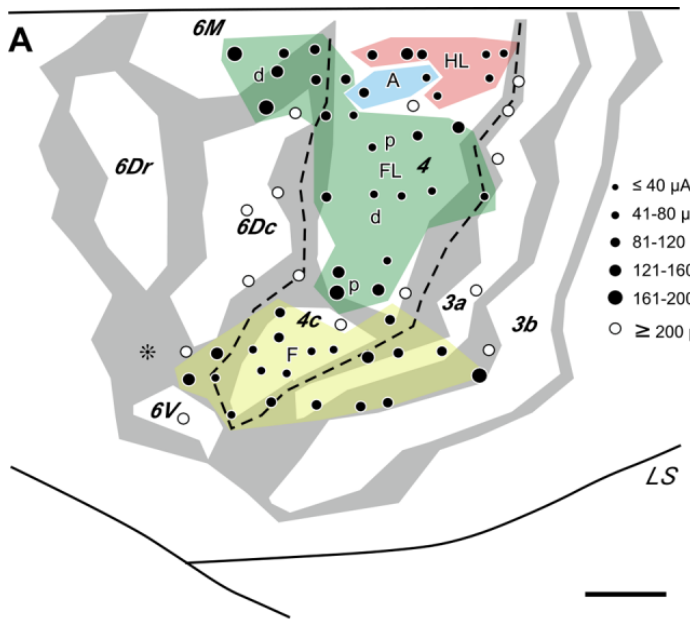
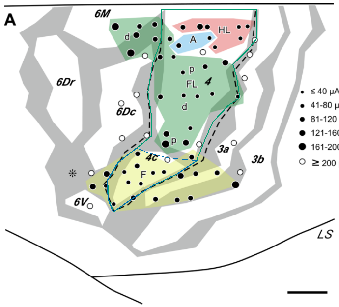
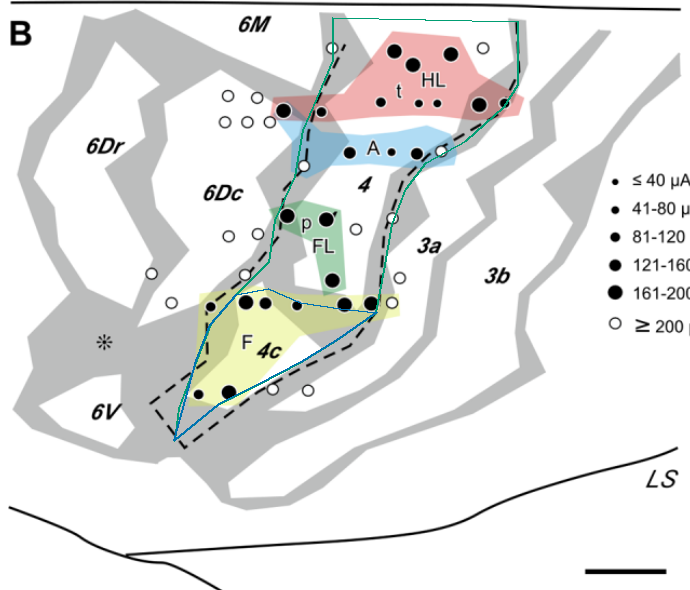
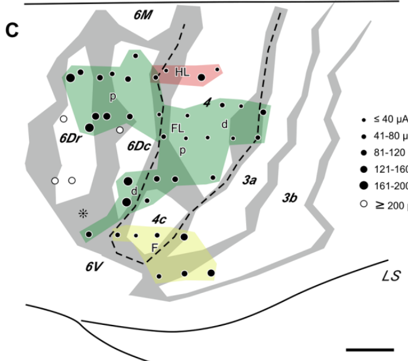
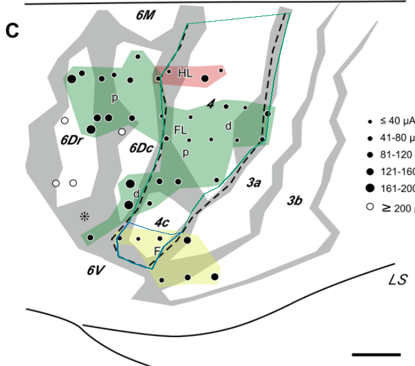
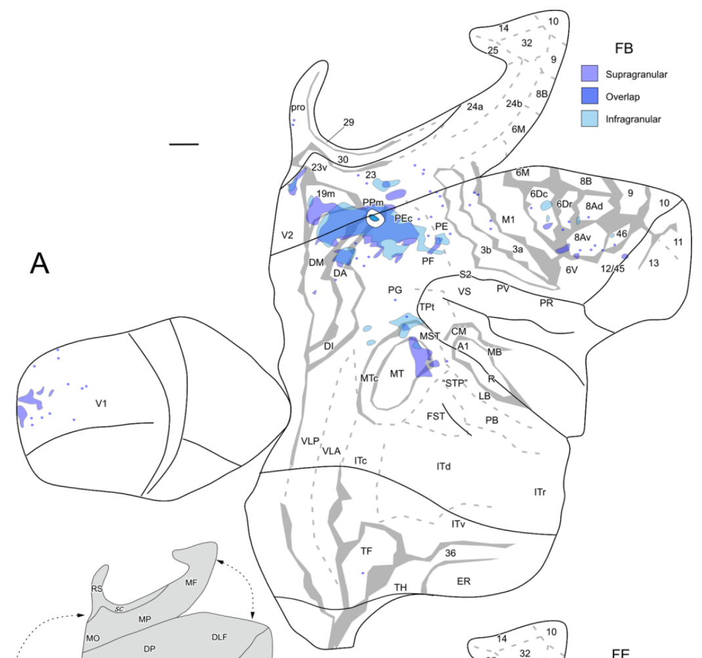
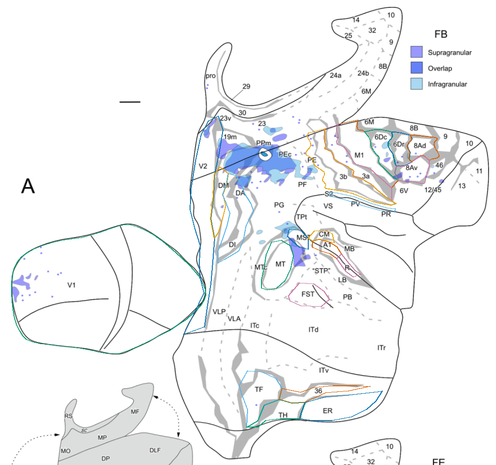

Source image, saved anatomical outlines and scale endpoints. Unfinished fields are NA.
REJECTED FOR ANALYSIS: existing outlines do not adequately follow architectural borders. Original geometry retained for audit. See boundary_audit.html; the CJ58R printed-interior pilot is separate and is not a full-field area estimate.


| Field | mm² | % neocortex | Status |
|---|---|---|---|
| M1_dorsal_projection | NA | NA | rejected_pending_retrace |
| M1_face_dorsal_component | NA | NA | rejected_pending_retrace |
REJECTED FOR ANALYSIS: existing outlines do not adequately follow architectural borders. Original geometry retained for audit. See boundary_audit.html; the CJ58R printed-interior pilot is separate and is not a full-field area estimate.

| Field | mm² | % neocortex | Status |
|---|---|---|---|
| M1_dorsal_projection | NA | NA | rejected_pending_retrace |
| M1_face_dorsal_component | NA | NA | rejected_pending_retrace |
REJECTED FOR ANALYSIS: existing outlines do not adequately follow architectural borders. Original geometry retained for audit. See boundary_audit.html; the CJ58R printed-interior pilot is separate and is not a full-field area estimate.


| Field | mm² | % neocortex | Status |
|---|---|---|---|
| M1_dorsal_projection | NA | NA | rejected_pending_retrace |
| M1_face_dorsal_component | NA | NA | rejected_pending_retrace |
Seven CJ58R fields retraced/added using approximate gray-band centers in pass3; these remain provisional pixel-only estimates excluded from analysis. Other existing fields remain rejected pending retracing.


| Field | mm² | % neocortex | Status |
|---|---|---|---|
| V1 | NA | NA | rejected_pending_retrace |
| V2 | NA | NA | rejected_pending_retrace |
| M1_dorsal_component | NA | NA | provisional_gray_band_center_estimate |
| 3a | NA | NA | provisional_gray_band_center_estimate |
| 3b | NA | NA | provisional_gray_band_center_estimate |
| S2 | NA | NA | rejected_pending_retrace |
| MT | NA | NA | rejected_pending_retrace |
| MST | NA | NA | rejected_pending_retrace |
| A1 | NA | NA | rejected_pending_retrace |
| R | NA | NA | rejected_pending_retrace |
| CM | NA | NA | rejected_pending_retrace |
| TF | NA | NA | rejected_pending_retrace |
| TH | NA | NA | rejected_pending_retrace |
| ER | NA | NA | rejected_pending_retrace |
| 36 | NA | NA | rejected_pending_retrace |
| FST | NA | NA | rejected_pending_retrace |
| DM | NA | NA | rejected_pending_retrace |
| DA | NA | NA | rejected_pending_retrace |
| 6Dc | NA | NA | provisional_gray_band_center_estimate |
| 6Dr | NA | NA | provisional_gray_band_center_estimate |
| 8Ad | NA | NA | provisional_gray_band_center_estimate |
| 8Av | NA | NA | provisional_gray_band_center_estimate |
| VLA | NA | NA | not_yet_digitized |
| VLP | NA | NA | not_yet_digitized |
| MTc | NA | NA | not_yet_digitized |
| ITc | NA | NA | not_yet_digitized |
| ITd | NA | NA | not_yet_digitized |
| ITr | NA | NA | not_yet_digitized |
| ITv | NA | NA | not_yet_digitized |
| STP | NA | NA | not_yet_digitized |
| LB | NA | NA | not_yet_digitized |
| PB | NA | NA | not_yet_digitized |
| MB | NA | NA | not_yet_digitized |
| PV | NA | NA | not_yet_digitized |
| VS | NA | NA | not_yet_digitized |
| PR | NA | NA | not_yet_digitized |
| DI | NA | NA | not_yet_digitized |
| PPm | NA | NA | not_yet_digitized |
| PEc | NA | NA | not_yet_digitized |
| PE | NA | NA | not_yet_digitized |
| PF | NA | NA | not_yet_digitized |
| PG | NA | NA | not_yet_digitized |
| TPt | NA | NA | not_yet_digitized |
| 19m | NA | NA | not_yet_digitized |
| 23 | NA | NA | not_yet_digitized |
| 23v | NA | NA | not_yet_digitized |
| 29 | NA | NA | not_yet_digitized |
| 30 | NA | NA | not_yet_digitized |
| 6M | NA | NA | not_yet_digitized |
| 6V | NA | NA | not_yet_digitized |
| 8B | NA | NA | not_yet_digitized |
| 9 | NA | NA | not_yet_digitized |
| 10 | NA | NA | not_yet_digitized |
| 11 | NA | NA | not_yet_digitized |
| 12/45 | NA | NA | not_yet_digitized |
| 13 | NA | NA | not_yet_digitized |
| 14 | NA | NA | not_yet_digitized |
| 24a | NA | NA | not_yet_digitized |
| 24b | NA | NA | not_yet_digitized |
| 25 | NA | NA | not_yet_digitized |
| 32 | NA | NA | not_yet_digitized |
| 46 | NA | NA | not_yet_digitized |
| pro | NA | NA | not_yet_digitized |
| whole_neocortex | NA | NA | not_measurable |